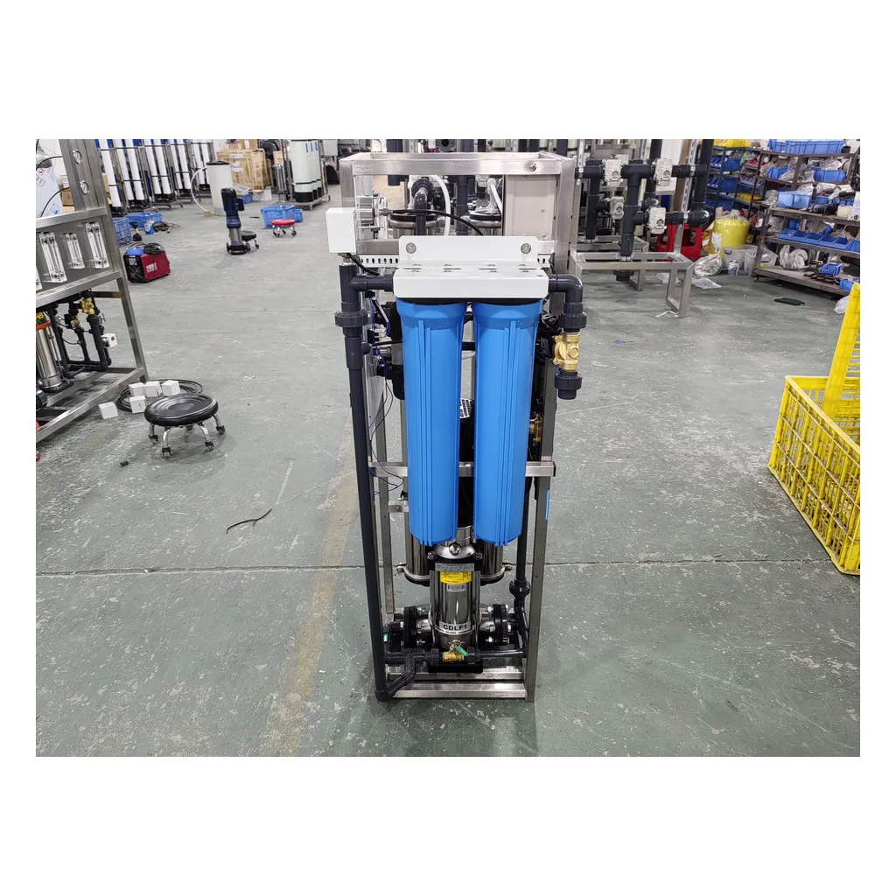
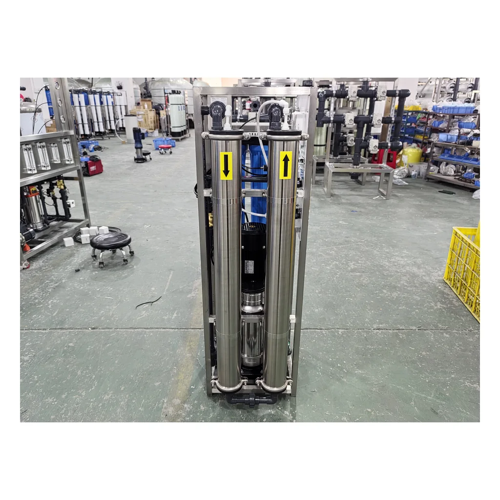

Thiết bị lọc nước RO trung tâm dùng cho mục đích thương mại 250-500 LPH
Thiết bị lọc nước RO trung tâm dùng cho mục đích thương mại 250-500 L/h — Quy trình xử lý: lõi PP 20-inch + lõi CTO 20-inch + lõi PP 20-inch + RO.
Xem sản phẩm
Hệ thống RO bằng thép không gỉ 250-500 LPH này là hệ thống thẩm thấu ngược thương mại nhỏ gọn dành cho bên mua cần cách bố trí theo chiều đứng dễ tiếp cận, kết cấu bằng SUS304 và tùy chọn bánh xe xoay. Cấu hình tham chiếu 500 LPH kết hợp hai bộ tiền lọc 20-inch, hai phần tử màng Vontron 4040 và các thiết bị giám sát gắn trên bảng điều khiển.
Cơ sở thiết kế kỹ thuật: Cấu hình 500 LPH dưới đây dựa trên điều kiện tham chiếu với TDS nước cấp là 1000 ppm. Sản lượng cuối cùng, tỷ lệ thu hồi và việc lựa chọn màng phụ thuộc vào kết quả phân tích nước thực tế, nhiệt độ, áp suất và lịch vận hành.
Bảng phân biệt cấu hình tham chiếu 500 LPH đã được xác nhận với các tùy chọn riêng cho từng dự án.
| Model và cấu hình tham chiếu | Cấu hình tiêu chuẩn CT-0.5T, hệ thống RO 500 LPH |
|---|---|
| Công suất nước thành phẩm danh định | Cấu hình tham chiếu tiêu chuẩn 500 LPH; có phiên bản 250 LPH theo cấu hình dự án |
| TDS tham chiếu của nước cấp | 1000 ppm |
| Lưu lượng nước cấp | ≥1.5 m3/h |
| Tỷ lệ thu hồi nước khuyến nghị | ≥30%; tỷ lệ thu hồi nước thực tế phụ thuộc vào nước cấp, nhiệt độ và điều kiện vận hành |
| Điện áp tiêu chuẩn | 220 V / 50 Hz / một pha |
| Điện áp tùy chọn | 220 V / 60 Hz / một pha; 110 V / 60 Hz / một pha |
| Các đầu nối | Đầu vào nước cấp DN20; các đầu ra nước thấm qua màng và nước cô đặc DN15 |
| Lọc sơ bộ | 2 x cốc lọc màu xanh 20-inch |
| Lõi lọc | 1 x lõi lọc cặn PP kích thước 20-inch, cấp lọc 5 micron + 1 x lõi lọc than CTO kích thước 20-inch |
| Bơm cao áp | LEO EVPm2-11, loại đồng trục, 1 pc |
| Thông số làm việc của bơm | Q 1.5 m3/h; H 105 m; 1.8 kW; 220 V / 50 Hz / một pha |
| Phần tử màng RO | 2 x phần tử màng Vontron 4040 |
| Vỏ màng | 2 x vỏ màng bằng thép không gỉ SUS304, cỡ 4040 |
| Lưu lượng kế | 2 x lưu lượng kế phao 5 GPM lắp trên bảng điều khiển |
| Điều chỉnh lưu lượng | 1 x van kim SUS304 DN15 |
| Đồng hồ áp suất | 1 x đồng hồ áp suất 1 MPa + 1 x đồng hồ áp suất 2.5 MPa |
| Công tắc áp suất thấp | Dải điều chỉnh từ -0.5 đến 3 bar |
| Van điện từ | Van điện từ súc rửa DN15 + van điện từ cấp nước DN20 |
| Van vận hành bằng tay | Van khóa bằng đồng thau DN15 |
| Bộ điều khiển | Bộ điều khiển RO mini có chức năng hiển thị TDS và mức chất lỏng; 220 V / 50-60 Hz |
| Bộ khởi động | Bộ khởi động từ; 220 V / 50-60 Hz |
| Tủ điều khiển | Tùy chọn thép cacbon thấp hoặc thép không gỉ |
| Hệ thống đường ống | Ống và phụ kiện UPVC, PN16 |
| Khung | Khung skid dạng đứng bằng SUS304; có phiên bản di động trang bị bánh xe |
| Chứng nhận | Được chứng nhận CE; có thể cung cấp bản sao chứng nhận theo yêu cầu |
Hệ thống RO 500 LPH phù hợp khi dự án cần khoảng 0.5 m3 nước thấm qua màng mỗi giờ vận hành trong các điều kiện thiết kế đã được xác nhận. Phiên bản 250 LPH được cấu hình riêng; không mặc định số lượng màng, công suất bơm, hệ thống điều khiển và tải điện của phiên bản này dựa trên danh mục vật tư của hệ thống 500 LPH.
Hệ thống tham chiếu 500 LPH sử dụng hai phần tử màng Vontron 4040. Có thể lựa chọn LP21-4040, ULP21-4040 hoặc XLP11-4040 theo độ mặn của nước cấp, nhiệt độ, áp suất và chất lượng nước thấm qua màng mục tiêu. Model màng được xác nhận trong bản chào kỹ thuật thay vì được xem là thông số áp dụng chung cho mọi trường hợp.
Không cam kết giá trị cố định cho tỷ lệ loại bỏ muối, chất lượng nước thấm qua màng hoặc lưu lượng qua màng khi chưa có kết quả phân tích nước cấp và các điều kiện thử nghiệm đã thống nhất.
Các hình ảnh mặt trước, bộ lọc sơ bộ và vỏ màng cho thấy máy theo cấu hình tham chiếu đã được lắp ráp tại nhà máy.


Cụm skid tích hợp chức năng hiển thị áp suất, điều chỉnh lưu lượng nước thấm qua màng và nước cô đặc, súc rửa màng tự động và giám sát độ dẫn điện/TDS. Thương hiệu linh kiện, logic cảnh báo và ngôn ngữ bảng điều khiển có thể được xác nhận theo thị trường đích.
Hệ thống RO di động lắp trên skid bằng thép không gỉ có thể phục vụ việc xử lý nước uống cho mục đích thương mại, các cơ sở sản xuất nhỏ, nhu cầu nước tại khu vực vận hành nội bộ của cơ sở lưu trú và dịch vụ ăn uống, phòng thí nghiệm và các dự án khác có nguồn nước cấp phù hợp. Mức độ phù hợp với ứng dụng được xác định dựa trên kết quả phân tích nước và yêu cầu chất lượng nước ở công đoạn sau.
Cấu hình tham chiếu sử dụng hai phần tử màng Vontron 4040. LP21-4040, ULP21-4040 hoặc XLP11-4040 được lựa chọn sau khi xem xét các yêu cầu về nước cấp và nước thấm qua màng.
Không nhất thiết. Phiên bản 250 LPH được thiết kế riêng, vì vậy số lượng màng, bơm và các thông số điện của phiên bản này được xác nhận trong bản chào kỹ thuật.
Có. Bánh xe tùy chọn giúp di chuyển khung giữa các vị trí vận hành phù hợp. Thiết bị phải được cố định chắc chắn và kết nối đúng cách trước khi vận hành.
Không. Công suất này là giá trị danh định tham chiếu. Nhiệt độ, áp suất nước cấp, độ mặn, tỷ lệ thu hồi nước và việc lựa chọn màng ảnh hưởng đến hiệu suất vận hành thực tế.
Có. Thiết bị được chứng nhận CE và có thể cung cấp bản sao chứng nhận theo yêu cầu. Cấu hình điện của thiết bị đặt mua được xác nhận trong bản chào kỹ thuật.
Thiết bị lọc nước RO trung tâm dùng cho mục đích thương mại 250-500 L/h — Quy trình xử lý: lõi PP 20-inch + lõi CTO 20-inch + lõi PP 20-inch + RO.
Xem sản phẩm
Thiết bị lọc nước thẩm thấu ngược thiết kế mỏng gọn 250-500 L/h — Quy trình xử lý: lõi lọc bông PP + lõi lọc than hoạt tính + RO.
Xem sản phẩm
Thiết bị xử lý nước thẩm thấu ngược công nghiệp quy mô lớn 3-100 TPH — Lưu lượng nước tinh khiết: 3-100 t/h.
Xem sản phẩmGửi kết quả phân tích nước cấp, công suất, điện áp, số giờ vận hành và các yêu cầu lắp đặt để được đánh giá kỹ thuật.